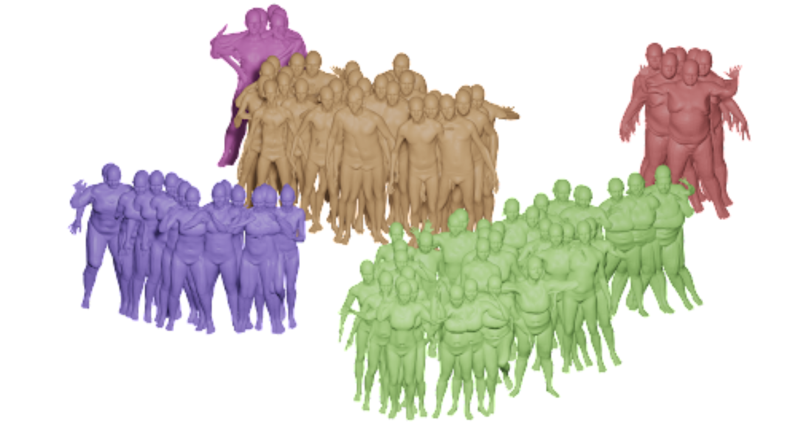
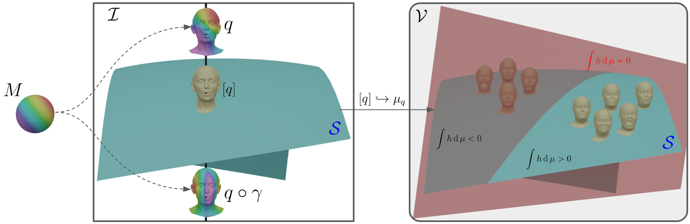
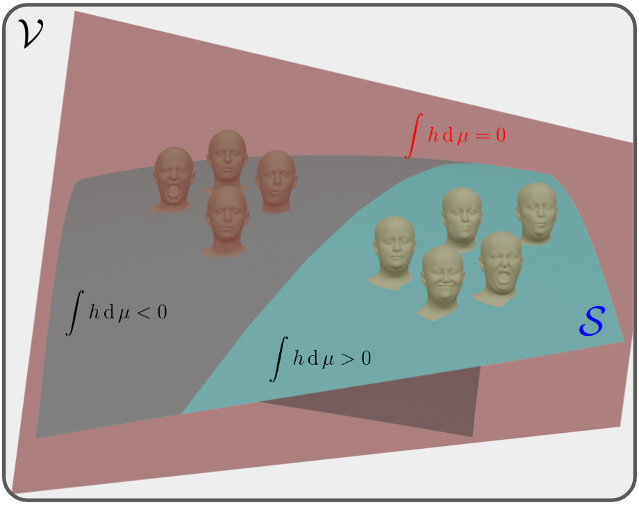
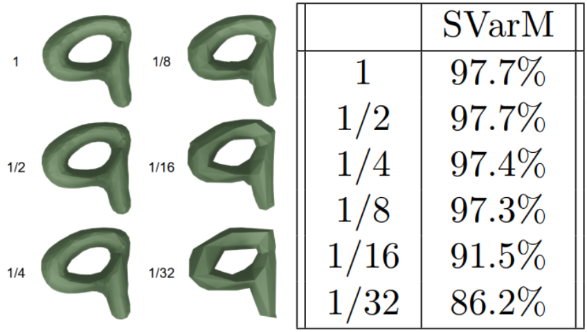

$\renewcommand{\Diff}{\mathcal{D}}\newcommand{\dist}{\mathrm{dist}}\renewcommand{\Imm}{\mathcal{I}}\newcommand{\Shape}{\mathcal{S}}\newcommand{\R}{\mathbb{R}}\newcommand{\vol}{\operatorname{vol}}\newcommand{\Vol}{\mathrm{Vol}}\newcommand{\Var}{V}$
<h4>SVarM: regression and classification <br> in the space of varifold representations of surfaces</h4> <hr> <div class="row" style="margin-top: 100px;"> <div class="col-md-2" align="left" markdown="1"> </div> <div class="col-md-8" align="center" markdown="1"> <p><b>Emmanuel Hartman</b>, and Nicolas Charon<br> University of Houston<br></p><hr><p>Curves and Surfaces 2026<br>12 June 2026</p> </div> <div class="col-md-2" align="left" markdown="1"> </div> </div> <div class="row" style="margin-top: 100px;"> <div class="col-md-4" align="left" markdown="1"> <img src="figs/nsf.png" height="120px" /> </div> <div class="col-md-4" align="center" markdown="1"> </div> <div class="col-md-4" align="right" markdown="1"> <img src="figs/uh_red.png" height="120px" /> </div> </div>
<h4 align="left"><s>Challenges</s> Realities of working with Surface Data</h4><hr> <div class="col-md-4" markdown="1" align="center" vertical-align="center"> <div class="row"> <div class="col-md-12" markdown="1" align="center" vertical-align="center"> <div style="position:relative; width:100%; height:300px;"> <iframe src="titan.html" width="100%" height="300px" style="border:none; position:absolute; top:0; left:0; z-index:1;"> </iframe> <img src="figs/titan.gif" height="150" style="position:absolute; top:10px; left:10px; z-index:10; pointer-events:none;"> </div> </div> </div> <br> <p></p> </div> <div class="col-md-4" markdown="1" align="left" vertical-align="center"> <iframe src="skull.html" width="100%" height="300px" style="border:none;"> </iframe> <iframe src="LAA_sbs2.html" width="100%" height="150px" style="border:none;"> </iframe> <div class="row"> <div class="col-md-6" markdown="1" align="left" vertical-align="center"><p>Vertices: 1430 <br> Faces: 2865</p></div> <div class="col-md-6" markdown="1" align="left" vertical-align="center"><p>Vertices: 10252 <br> Faces: 20532</p></div> </div> </div> <div class="col-md-4" markdown="1" align="left" vertical-align="center"> <div> <ul style="list-style-position: outside; ; padding: 20; margin: 10;"> <li style="margin-bottom:7px;" ><p>Acessiblility of 3D surface capture (ie photogrammetry) has lead to an abundance of data.<br></p><br></li> <li style="margin-bottom:7px;" ><p>Moreover, 3D scans are increasingly able to capture more topologically complex and detailed data. <br></p></li> <li style="margin-bottom:7px;" ><p>Large curated surface datasets (i.e AMASS ~9.3 million surfaces) create an oppurtunity for learning based approaches. <br></p><br></li> </ul> <p><strong>Challenges For Learning on Surfaces</strong></p> <ul style="list-style-position: outside; ; padding: 20; margin: 10;"> <li style="margin-bottom:7px;" ><p>Detailed surface scans require high-dimensional representations (large number of vertices/faces), and multiple samples in a dataset do not have a fixed dimensionality.<br></p></li> <li style="margin-bottom:7px;" ><p>Surface data includes variability that does not change the shape of the data (e.g., sampling and reparameterization).<br></p></li> </ul> </p> </div> </div>
<h4 align="left">Shape Space and Parameterization Invariant Learning</h4><hr> <div class="col-md-12" markdown="1" align="left" vertical-align="center"><p>Let $M$ be a smooth oriented Riemannian 2-manifold.<br><br></p></div> <div class="col-md-7" markdown="1" align="left" vertical-align="center"><p> <b>Parameterized Objects :</b> bi-Lipschitz regular embedding from $M$ to $\R^3$ <br>$$\mathcal{I} := \operatorname{Emb}_{\text{Lip}}(M,\R^3)$$<br> <b>Reparameterization Group :</b> a bi-Lipschitz homeomorphism of $M$ <br>$$\mathcal{D} := \operatorname{Diff}_{\text{Lip}}(M)$$<br> <b>Shape Space:</b> We consider the space of shape as the quotient space of equivalence classes. <br>$$\mathcal{S} := \mathcal{I}/\mathcal{D}$$ $$[q]=\{q \circ \gamma: \ \gamma \in \mathcal{D}\}$$<br><br></p><div class="fragment" data-fragment-index="2"><p>How can we represent surfaces in a parameterization invariant way? </p></div></div> <div class="col-md-5" markdown="1" align="left" vertical-align="center"><br><img src="figs/shape_space.png" width="100%" /></div>
<h4 align="left">Varifold Representations of Geometric Data$^{1,2,3,4}$</h4><hr> <div class="row"> <div class="col-md-6" markdown="1" align="left" vertical-align="center"><p> We consider the space of varifolds, $\mathcal{V}$, given by the positive Radon measure on $\R^3 \times S^2$ where $S^2$ denotes the unit sphere.<br><br> Any $q\in \mathcal{I}$ can be canonically mapped to a varifold given by the pushforward measure $\mu_q : =(q,v_q)_*\vol_q \in \mathcal{V}$ where $v_q$ denotes the unit normal vector field and $\vol_q$ is the area measure on $M$.</p><br> <div class="fragment" data-fragment-index="2"><div class="b" align="left"><div class="bbody" align="left"><b>Theorem 1.</b> For any $q\in \mathcal{I}$ and $\gamma\in\mathcal{D}$, it holds that $ \mu_{q\circ\gamma}=\mu_q$. Consequently, one obtains a well-defined map $[q] \in \mathcal{S} \mapsto \mu_q \in \mathcal{V}$ which, in addition, is injective. </div></div></div> <div class="fragment" data-fragment-index="3"><p>By the Riesz-Markov-Kakutani representation theorem, $\mathcal{V}$ is the dual of $C_0(\R^3\times S^2,\R)$. The duality bracket between $\mathcal{V}$ and $C_0(\R^3 \times S^2,\R)$ is given by $$\langle \mu , h\rangle = \int_{\R^3 \times S^2} h(x,v) d\mu(x,v).$$ </p></div></div> <div class="col-md-6" markdown="1" align="center" vertical-align="center"><div class="fragment" data-fragment-index="1"><img src="figs/varifold_representations2.png" width="50%" /><p>$$ \qquad\qquad\mu_q \approx \sum_{i=1}^ma_i \delta_{(c_i,n_i)}$$</p></div><br><div class="fragment" data-fragment-index="2"> <p></p> </div></div> <p align="left"><sub>$^1$Charon & Trouvé. "The varifold representation of nonoriented shapes for diffeomorphic registration."</sub><br> <sub>$^2$Kaltenmark, et al. "A general framework for curve and surface comparison and registration with oriented varifolds."</sub><br> <sub>$^3$Feydy et al. "Optimal transport for diffeomorphic registration"</sub><br> <sub>$^4$ Roussillon & Glaunès. "Representation of surfaces with normal cycles and application to surface registration."</sub><br></p> </div>
<h4 align="left"> A Support Vector Machine Approach on the space of Varifolds</h4><hr> <div class="row" align="left"> <br> <div class="col-md-6" markdown="1" align="left" vertical-align="center"> <p> Support vector machines (SVMs) perform linear regression in $\R^n$ by learning the optimal $w\in \R^n,\beta\in \R$ so that $$f(v) \approx v\cdot w+\beta.$$</p> <p> SVMs perform linear classification by learning the optimal $w\in \R^n,\beta\in \R$ such that the hyperplane given by $$\{v\in \R^n\,|\, v\cdot w = \beta \}$$ separates subsets of $\R^n$.</p><br><br> <div class="b" align="left"><div class="bbody" align="left"><b>Definition.</b> Two disjoint sets $C_1,C_2 \subseteq \R^n$ are strictly separated by a hyperplane defined by $w\in \R^n,\beta\in \R$ when: \begin{equation} \sup_{v\in C_1} v\cdot w \,< \beta < \, \inf_{u\in C_2} u\cdot w \end{equation} </div></div> </div> <div class="col-md-6" markdown="1" align="center" vertical-align="center"> <br><img src="figs/SVM.png" width="50%" /> </div> </div>
<h4 align="left"> A Support Vector Machine Approach on the space of Varifolds</h4><hr> <div class="row" align="left"> <p>The <b>S</b>upport <b>Var</b>ifold <b>M</b>achine (SVarM) model mirrors the approach of SVMs replacing vector inner products by the duality bracket. <div class="col-md-6" markdown="1" align="left" vertical-align="center"> <p> Support vector machines (SVMs) perform linear regression in $\R^n$ by learning the optimal $w\in \R^n,\beta\in \R$ so that $$f(v) \approx v\cdot w+\beta.$$</p> <p> SVMs perform linear classification by learning the optimal $w\in \R^n,\beta\in \R$ such that the hyperplane given by $$\{v\in \R^n\,|\, v\cdot w = \beta \}$$ separates subsets of $\R^n$.<br><br></p> <div class="b" align="left"><div class="bbody" align="left"><b>Definition.</b> Two disjoint sets $C_1,C_2 \subseteq \R^n$ are strictly separated by a hyperplane defined by $w\in \R^n,\beta\in \R$ when: \begin{equation} \sup_{v\in C_1} v\cdot w \,< \beta < \, \inf_{u\in C_2} u\cdot w \end{equation} </div></div> </div> <div class="col-md-6" markdown="1" align="left" vertical-align="center"> <p> Linear regression is performed by finding the optimal $h \in C_0(\mathbb{R}^3 \times S^2, \mathbb{R}), \beta \in \mathbb{R}$ so that $$f(\mu)\approx \langle\mu,h\rangle+\beta.$$</p> <br> <p> Linear classification is performed by learning $h \in C_0(\mathbb{R}^3 \times S^2, \mathbb{R})$ ,$\beta \in \mathbb{R}$ which define a codimension 1 subspace of $\mathcal{V}$ given by $$\{\mu\in \mathcal{V}\,|\,\langle \mu,h\rangle = \beta \}$$ that separate sets of varifolds. </p> <div class="b" align="left"><div class="bbody" align="left"><b>Definition.</b> Two disjoint sets $C_1,C_2 \subseteq \mathcal{V}$ are strictly separated by some test function $h$ when: \begin{equation} \sup_{\mu\in C_1} \langle \mu,h\rangle \,<\, \inf_{\nu\in C_2} \langle \nu,h\rangle \end{equation} </div></div> </div> </div>
<h4 align="left"> A Support Vector Machine Approach on the space of Varifolds</h4><hr> <div class="row" align="left"> <p>The <b>S</b>upport <b>Var</b>ifold <b>M</b>achine (SVarM) model mirrors the approach of SVMs replacing vector inner products by the duality bracket. <div class="col-md-6" markdown="1" align="left" vertical-align="center"> <p> Linear regression is performed by finding the optimal $h \in C_0(\mathbb{R}^3 \times S^2, \mathbb{R}), \beta \in \mathbb{R}$ so that $$f(\mu)\approx \langle\mu,h\rangle+\beta.$$</p> <br> <p> Linear classification is performed by learning $h \in C_0(\mathbb{R}^3 \times S^2, \mathbb{R})$ ,$\beta \in \mathbb{R}$ which define a codimension 1 subspace of $\mathcal{V}$ given by $$\{\mu\in \mathcal{V}\,|\,\langle \mu,h\rangle = \beta \}$$ that separate sets of varifolds. </p> <div class="b" align="left"><div class="bbody" align="left"><b>Definition.</b> Two disjoint sets $C_1,C_2 \subseteq \mathcal{V}$ are strictly separated by some test function $h$ when: \begin{equation} \sup_{\mu\in C_1} \langle \mu,h\rangle \,<\, \inf_{\nu\in C_2} \langle \nu,h\rangle \end{equation} </div></div> </div> <div class="col-md-6" markdown="1" align="center" vertical-align="center"> <br><p></p> </div> </div>
<h4 align="left"> Existence of Separators and a counter example</h4><hr> <br> <div class="row"> <div class="col-md-8" markdown="1" align="left" vertical-align="center"> <div class="fragment" data-fragment-index="3"> <div class="b" align="left"><div class="bbody" align="left"><b>Theorem 2 (A Condition for Seperators Between Sets of Shapes).</b> Let $\Sigma_1, \Sigma_2$ be finite sets of continuous shapes in $\mathcal{I}$ such that either: <br> 1) for each $q' \in \Sigma_2$, $q'(M)\not\subseteq \bigcup_{q\in \Sigma_1} q(M)$<br> 2) for each $q \in \Sigma_1$, $q(M)\not\subseteq \bigcup_{q'\in \Sigma_2} q'(M)$.<br> Then the two sets $\Sigma_1, \Sigma_2$ are strictly separable by a test function $h \in C_0(\R^3\times S^2,\R)$. </div></div></div> <div class="fragment" data-fragment-index="4"> <p><br><br>When this condition is not met there are examples of sets of shapes which cannot be separated by a test function $h\in C_0(\R^3\times S^2,\R)$.</p> </div> </div> <div class="fragment" data-fragment-index="5"> <div class="col-md-4" markdown="1" align="left" vertical-align="center"> <iframe src="inseparability.html" width="300px" height="300px" style="border:none;"> </iframe> </div> </div> </div>
<h4 align="left"> Approximating Optimal Test Functions</h4><hr> <div class="col-md-12" markdown="1" align="left" vertical-align="center"><p>Given a function $f$ on a set of shapes, how can we learn a test funtion $h\in C_0(\R^3\times S^2,\R)$ and bias $\beta\in\R$ so that $$f(q)\approx\langle\mu_q,h\rangle+\beta?$$</p><br><br></div> <div class="col-md-6" markdown="1" align="left" vertical-align="center"><div class="fragment" data-fragment-index="2"><p>To learn a linear function in the space of varifolds, we approximate a test function using an MLP,<br> $h_\theta:\R^{6}\to\R$ with trainable parameters $\theta$.<br><br> To perform multi-class classification of varifolds, we modify the architecture to learn a vector valued functions $h_\theta:\R^6\to \R^c$ where $\int_{\R^3\times S^2} h_\theta \operatorname{d}\mu$ is a $c$-dimensional vector where each entry is interpreted as a logit of the probability that $\mu$ belongs to the corresponding class.</p></div></div> <div class="col-md-6" markdown="1" align="center" vertical-align="center"><div class="fragment" data-fragment-index="3"><p><img src="figs/NeuralNetworkModel.png" width="100%" /></p></div></div>
<h4 align="left"> Linear Regression and Classification Expeirements</h4><hr> <div class="col-md-6" markdown="1" align="left" vertical-align="center"> <div class="fragment" data-fragment-index="1"><p><b>Rotation Regression:</b> We perform regression on ~13k synthetically rotated human meshes (with an 80-20 training testing split). Each mesh is labeled by the rotation matrix applied to an upright mesh to generated the data. We apply the inverse of the predicted matrix to realign the testing data. <br><br><b>Comparison to Optimization Baseline:</b> Our model attains superior accuracy to direct optimization over $SO(3)$. This optimization requires ~15-30s per mesh while our trained model aligns the entire test set in <15s. </p></div> <br> <div class="fragment" data-fragment-index="2"><p><b>MNIST Surfaces:</b> Converted the full MNIST dataset into 3D height-map meshes (20 minutes preprocessing). Training used ~60k meshes with digits as labels, and testing was done on ~10k meshes. <br><br><b>Efficiency vs. Accuracy:</b> Despite having $<$2k parameters, SVarM achieves 97.7% accuracy on MNIST, outperforming models that require significantly more parameters. </p></div> </div> <div class="col-md-6" markdown="1" align="left" vertical-align="center"> <div class="fragment" data-fragment-index="1"><img src="figs/Regression2.png" width="100%" /></div><br> <div class="fragment" data-fragment-index="2"><img src="figs/MNIST_Classify.png" width="100%" /></div> </div>
<h4 align="left"> Stability Results</h4><hr> <div class="col-md-8" markdown="1" align="left" vertical-align="center"> <div class="fragment" data-fragment-index="1"><div class="b" align="left"><div class="bbody" align="left"><b>Theorem 3 (Stability in the Space of Varifolds).</b> Let $\mu,\nu\in\mathcal{V}$ and $h\in C_0(\R^n\times S^{n-1})$ such that $h$ is Lipchitz with constant $K$. Then, $$|\langle\mu,h\rangle - \langle\nu,h\rangle|\leq\|h\|_\infty\cdot \|\mu-\nu\|_{\text{TV}}$$ and $$|\langle\mu,h\rangle - \langle\nu,h\rangle|\leq \left|\|\mu\|_{\text{TV}}-\|\nu\|_{\text{TV}}\right|\cdot\|h\|_\infty + \|\mu\|_{\text{TV}}\cdot K\cdot W_1\left(\frac{\mu}{m_\mu},\frac{\nu}{m_\nu}\right)$$ where $W_1$ denotes the 1-Wasserstein distance. </div></div></div><br> <div class="fragment" data-fragment-index="2"><div class="b" align="left"><div class="bbody" align="left"><b>Theorem 4 (Stability in the Space of Surfaces).</b> Let $h\in C_0(\R^n\times S^{n-1})$ such that $h$ is Lipschitz with constant $K$ and $q,q' \in \mathcal{I}$ such that $\|q - q'\|_{W^{1,\infty}} \leq C$. Then $$|\langle\mu_{q},h\rangle - \langle\mu_{q'},h\rangle| \leq CA_q(KC_1+C_2\|h\|_{\infty})$$ where $A_q$ is the surface area of $q$, and $C_1,C_2$ depend the maximum of the Lipschitz constants of $q$ and $q'$. </div></div></div> </div> <div class="col-md-4" markdown="2" align="left" vertical-align="center"> <div class="fragment" data-fragment-index="1"><br><img src="figs/loss_robust.png" width="100%" /></div><br><div class="fragment" data-fragment-index="2"><p></p></div> </div>
<h4 align="left">Towards Nonlinear Regressors and Classifiers</h4><hr> <div class="col-md-12" markdown="1" align="left" vertical-align="center"> <div class="b" align="left"><div class="bbody" align="left"><b>Theorem 4 (Existence of Non-Linear Approximators).</b> Let $\sigma: \R \rightarrow \R$ be a continuous non-polynomial function, $C$ a weak-* compact subset of $\mathcal{V}$ and $\psi:C \rightarrow \R$ a weak-* continuous function on $C$. Then for any $\varepsilon >0$, there exist $r \in \mathbb{N}$, $(h_k)_{k=1,\ldots,r}$ in $C_0(\R^3 \times S^2,\R)$, $(\beta_k) \in \R^r$ and $(c_k) \in \R^{r}$ such that for all $\mu \in C$: \begin{equation*} \left|\psi(\mu) - \sum_{k=1}^{r} c_k \sigma(\langle \mu, h_k \rangle + \beta_k) \right| \leq \varepsilon \end{equation*} </div></div></div> <div class="col-md-8" markdown="1" align="left" vertical-align="center"> <div class="fragment" data-fragment-index="3"><p><br><br>Define $h,\beta$ so that $\langle \mu,h \rangle+\beta$ corresponds to the number of balls on the upper half of the object and $\sigma(x)= 2^{-|x-1|^2}$, then $\sigma(\langle \mu,h \rangle+\beta)=1$ for the green surfaces while $\sigma(\langle \mu,h \rangle+\beta)=1/2$ for the red surfaces.</p></div> </div> <div class="col-md-4" markdown="1" align="left" vertical-align="center"> <iframe src="inseparability.html" width="300px" height="300px" style="border:none;"> </iframe> </div>
<h4 align="left">Conclusion And Future Work</h4><hr> <p align="left"><br> We discuss learning methods for parameterization invariant functions of surface data by approximating linear functions on the space of varifolds.<br> We propose a framework that leverages varifold representations of geometric data and their duality with $C_0(\R^3\times S^2,\R)$.<br><br></p><div class="row"> <div class="col-md-8" markdown="1" align="left"> <p class="fragment fade-left">+ Performing experiments with the framework for approximating non-linear functions and classification as described in the previous slide.<br><br> </p><br> <p class="fragment fade-left">+ Develop a method to visualize and interpret learned test functions.<br><br> </p><br> <p class="fragment fade-left">+ Applications other types of data that can be represented by varifolds (ie. contrast invariant representations of images). </p><br> <hr> <p> This talk is based on:<br><a href="https://arxiv.org/abs/2506.01189">https://arxiv.org/abs/2506.01189</a><br> The code for a Pytorch implementation of the SVarM model is available at:<br> <a href="https://github.com/SVarM25/SVarM">https://github.com/SVarM25/SVarM</a><br> These slides are available at:<br><a href="https://emmanuel-hartman.github.io/Talks/Slides/SVarM_CS26/talk.html">https://emmanuel-hartman.github.io/Talks/Slides/SVarM_CS26/talk.html</a> </p> </div> <div class="col-md-4" markdown="1" align="center"> <img src="figs/PneumoniaNist.png" width="90%" /> <table style="border-collapse:collapse; font-size:0.35em; margin-top:0.35em;"> <thead> <tr> <th style="border:1px solid #000; padding:3px 6px; text-align:right;">Method</th> <th style="border:1px solid #000; padding:3px 6px; text-align:center;">Accuracy</th> <th style="border:1px solid #000; padding:3px 6px; text-align:center;">AUC</th> <th style="border:1px solid #000; padding:3px 6px; text-align:center;">Params</th> </tr> </thead> <tbody> <tr> <td style="border:1px solid #000; padding:3px 6px; text-align:right;">ResNet-18</td> <td style="border:1px solid #000; padding:3px 6px; text-align:center;">86.4%</td> <td style="border:1px solid #000; padding:3px 6px; text-align:center;">0.956</td> <td style="border:1px solid #000; padding:3px 6px; text-align:center;">~11.7M</td> </tr> <tr> <td style="border:1px solid #000; padding:3px 6px; text-align:right;">ResNet-50</td> <td style="border:1px solid #000; padding:3px 6px; text-align:center;">88.4%</td> <td style="border:1px solid #000; padding:3px 6px; text-align:center;">0.962</td> <td style="border:1px solid #000; padding:3px 6px; text-align:center;">~25.5M</td> </tr> <tr> <td style="border:1px solid #000; padding:3px 6px; text-align:right;">SVarM (Linear)</td> <td style="border:1px solid #000; padding:3px 6px; text-align:center;">92.2%</td> <td style="border:1px solid #000; padding:3px 6px; text-align:center;">0.963</td> <td style="border:1px solid #000; padding:3px 6px; text-align:center;">1,300</td> </tr> <tr> <td style="border:1px solid #000; padding:3px 6px; text-align:right;">SVarM (Non-Linear)</td> <td style="border:1px solid #000; padding:3px 6px; text-align:center;">93.1%</td> <td style="border:1px solid #000; padding:3px 6px; text-align:center;">0.978</td> <td style="border:1px solid #000; padding:3px 6px; text-align:center;">36,962</td> </tr> </tbody> </table> <br> <center><p>Thank you for your attention!</p></center>